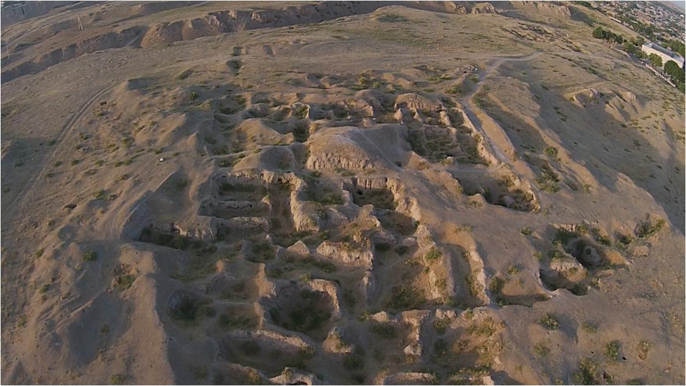
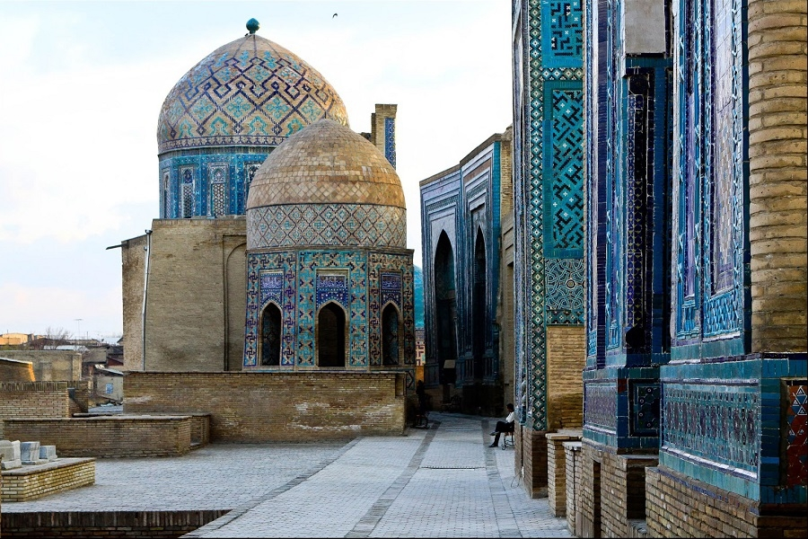
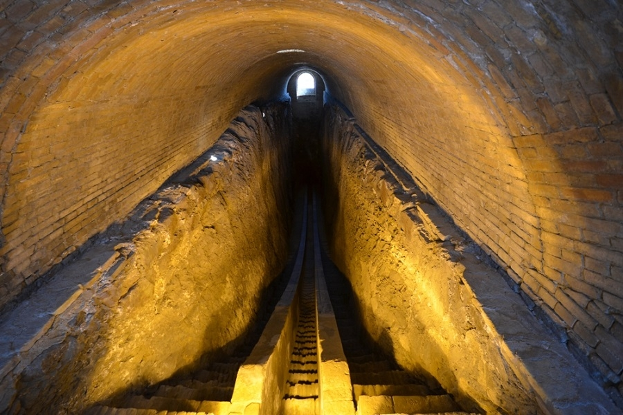

Samarqand sayyoramizdagi eng qadimiy shaharlardan biri bo‘lib, Rim va Afina bilan tengdoshdir. U 2750 yoshdan oshgan.
Ilk o‘rta asrlarda Samarqand Turk xoqonligi tarkibiga kirgan. 712-yilda shahar Qutayba ibn Muslim boshchiligidagi arablar tomonidan bosib olinib, Movarounnahr va Katta Xurosonning markaziga aylangan.IX asrda Samarqand Somoniylar davlatining tarkibiga, X asr oxirida esa Qoraxoniylar davlatining tarkibiga kirgan. Bu davrda Samarqandda ulkan me’moriy inshootlar qurilgan bo‘lib, ularning ko‘p qismi, afsuski, Chingizxon tomonidan vayron qilingan. Keyin Samarqand mo‘g‘ullar istilosi natijasida vayron bo‘lgan Xorazmshohlar davlatining tarkibiga kirdi.
Samarqand tarixiAfrosiyob yirik arxeologik yodgorlik bo‘lib, qadim Samarqand shahri tarixidan darak beradi. Qadim shaharning maydoni 219 gektarni tashkil qiladi. Arxeologlar bir-birini bosib turgan 11 ta madaniy qatlamlar borligini aniqlaganlar. Shaharning zamonaviy relefida qudratli qal’aning xarobalari, ko‘hna mudofaa devorlari, qachonlardir shaharga suv keladigan kanalning vayronalarini oson ajrata olish mumkin.
Shohi Zinda maqbarasi Samarqand shahridagi rang-barang qabr toshlarni o‘zida mujassam etgan qadimiy osori-atiqalardan biri bo‘lsa ne ajab. Ushbu tarixiy obidaning o‘ziga xos jihati shundaki, u XIV-XV asrlar mobaynida qurilgan barcha inshootlarni o‘zaro chambarchas uyg‘unlashtirgan. Mazkur binolar qadimgi Afrosiyob shahrining yaqinida qad rostlagan bo‘lib, bino joylashgan.
Ulug‘bek – asl ismi Muhammad Tarag‘ay buyuk o‘zbek astronomi va matematigi, davlat arbobi, Temurning nabirasidir. U. O‘rta Osiyo xalqlari ilm-fani va madaniyatini o‘rta asr sharoitida dunyo fanining oldingi safiga olib chiqqan olimlardan biri. Movarounnahrda Ulug‘bekning homiylik davrida (1409–1449) Samarqand yanada gullab–yashnadi: hunarmandlik, me’morlik, adabiyot ravnaq topdi, ilm-fan yuksaldi, savdo rivojlandi.
